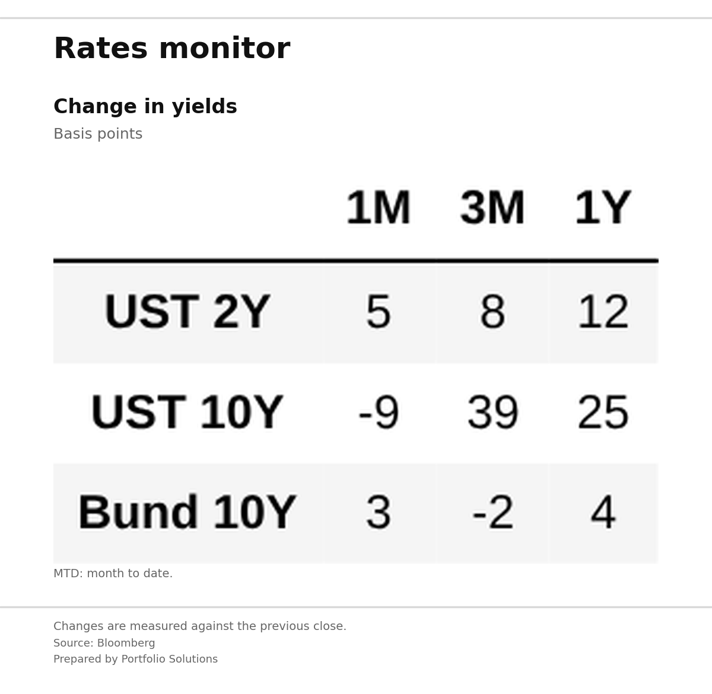
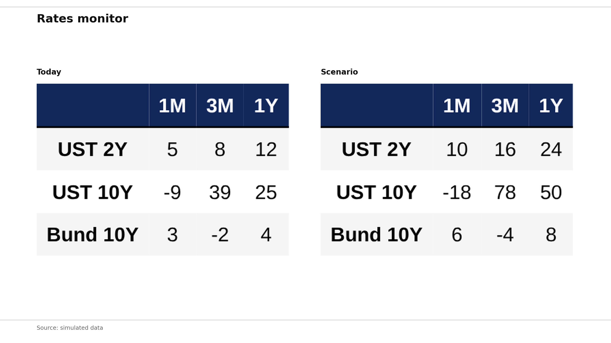

Sheet appearance and output¶
This page covers the sheet-level settings (size, margins, text styles, rules, scaling) and how to preview, save and reuse the final image.
import numpy as np
import pandas as pd
import helpers_ps as hp
TableSheet = hp.DfStyling.TableSheet
df = pd.DataFrame(
{"1M": [5, -9, 3], "3M": [8, 39, -2], "1Y": [12, 25, 4]},
index=["UST 2Y", "UST 10Y", "Bund 10Y"],
)
Sheet texts¶
| Method | Description |
|---|---|
add_title(text, *, size=None, color=None, weight=None) |
Sheet title above all panels. "" removes it. |
add_note(*notes, size=None, color=None) |
Appends general notes below the panels (above the sources). size / color apply to all notes, including those of each panel. |
add_source(*sources, size=None, color=None) |
Replaces the source lines at the bottom. Called with no arguments it clears them. |
Sources and copyright
Source lines are printed exactly as written; nothing (prefix, license, copyright) is added automatically. Write "Source: Bloomberg" or "© My Company" yourself.
sheet = (
TableSheet(df, width_in=6)
.style_table(font_size=11, text_align="center")
.panel(title="Change in yields", subtitle="Basis points", notes="MTD: month to date.")
.add_title("Rates monitor")
.add_note("Changes are measured against the previous close.", size=7)
.add_source("Source: Bloomberg", "Prepared by Portfolio Solutions", size=6.5)
)

config_layout: every visual parameter¶
config_layout(**changes) changes any field of SheetStyle, validating it before applying (nothing changes if a value is invalid). The same names can be given to the TableSheet(...) constructor. Fields that accept None return to automatic when set to None.
sheet.config_layout(width_in=13.33, height_in=7.5, scale="fit")
sheet.config_layout(wspace=None) # back to col_gap_in
SheetStyle fields¶
Size
| Field | Default | Description |
|---|---|---|
width_in |
8.0 |
Image width in inches. |
height_in |
None |
Image height in inches. None = computed from the content. When set, the image has exactly that height: sources are anchored to the bottom, panels that do not fit are scaled down and free space follows valign. |
valign |
"top" |
Where the panels sit when height_in leaves free space: "top", "center", "bottom". |
dpi |
200 |
Resolution of rendered tables and of the exported image. |
font_family |
"Inter" |
Font of titles, notes and sources. A comma-separated list is accepted; falls back to DejaVu Sans. |
Spacing (subplots_adjust semantics, None = automatic)
| Field | Default | Description |
|---|---|---|
left, right |
None |
Grid edges as a fraction of the image width. None uses margin_in. |
bottom, top |
None |
Grid edges as a fraction of the height measured from the bottom. Require height_in. |
wspace, hspace |
None |
Space between columns / rows as a fraction of the average column width / row height. None uses col_gap_in / row_gap_in. |
margin_in |
0.45 |
Side margin in inches. |
col_gap_in, row_gap_in |
0.30 |
Gaps in inches. |
pad_top_in, pad_bottom_in |
0.15, 0.20 |
Space above the top rule and below the last source line. |
Text
| Field | Default | Description |
|---|---|---|
header_size, header_color, header_weight |
18, #111111, bold |
Sheet title. |
title_size, title_color, title_weight |
12, #111111, bold |
Default panel titles. |
subtitle_size, subtitle_color |
9, #666666 |
Panel subtitles. |
title_gap_in |
0.08 |
Gap between a panel title block and its table. |
footer_size, footer_color |
9, #666666 |
Default size / color of notes and sources. |
note_size, note_color |
None |
Notes (panel and general). None uses footer_*. |
source_size, source_color |
None |
Source lines. None uses footer_*. |
line_spacing |
1.5 |
Line height as a multiple of the font size. |
wrap_text |
True |
Wrap titles and notes to the width of their cell. |
Rules and canvas
| Field | Default | Description |
|---|---|---|
line_color, line_width |
#D9D9D9, 1.2 |
Color and thickness (points) of the two horizontal rules. |
top_line, bottom_line |
True |
Show the rule above the content / above the sources. |
background |
"white" |
Canvas color. |
scale |
"uniform" |
How panels are resized (below). |
resampling |
"lanczos" |
Filter used to resize table images ("lanczos", "bicubic", "bilinear", "nearest"). |
table_font_px |
14 |
Base font size of rendered tables in CSS pixels (overridden by style_table(font_size=...)). |
zebra |
True |
Alternate row shading. |
You can also build the style once and reuse it across sheets:
from helpers_ps.DfStyling import SheetStyle
house_style = SheetStyle(width_in=13.33, height_in=7.5, header_size=20, line_color="#12275A")
sheet = TableSheet(df, style=house_style)
Scale: how panels are resized¶
scale |
Behavior |
|---|---|
"uniform" (default) |
The same scale for every table, the largest that fits all cells. Tables of the same sheet show the same visual font size. |
"fit" |
Stretches each panel to the width of its cell. |
"natural" |
Keeps the real size (pixels / dpi inches) and only shrinks panels that do not fit. |
Each panel can override the sheet value with panel(scale=...). Image panels treat "uniform" as "natural".
Spacing¶
subplots_adjust(left=None, bottom=None, right=None, top=None, wspace=None, hspace=None) positions the grid like matplotlib.pyplot.subplots_adjust. Only the values you pass change; every value is a fraction:
left,right: edges as a fraction of the image width.bottom,top: edges as a fraction of the height measured from the bottom (top=0.9leaves 10% above). They requireheight_in.wspace,hspace: space between columns / rows relative to the average column width / row height.
The sheet title and the sources are aligned with the left edge of the grid.
A slide-sized image¶
For a 16:9 slide use width_in=13.33, height_in=7.5:
sheet = (
TableSheet({"a": df, "b": df * 2}, width_in=13.33, height_in=7.5)
.on().style_table(font_size=14, text_align="center",
header_styles={"color": "white", "background-color": "#12275A"},
corner_styles={"background-color": "#12275A"})
.on("a").panel(title="Today")
.on("b").panel(title="Scenario")
.layout(nrows=1)
.subplots_adjust(left=0.06, right=0.94, top=0.80, bottom=0.14, wspace=0.12)
.add_title("Rates monitor")
.add_source("Source: simulated data")
)

OutputOutput methods¶
| Method / property | Returns | Description |
|---|---|---|
preview() |
the sheet | Shows the sheet in a Jupyter notebook (no file). |
render() |
the sheet | Pre-renders the tables so later outputs are immediate. Optional: every output renders on demand. |
save(path=None, *, dir=None, name=None, fmt=None, transparent=False) |
the sheet | Writes a file. Give either path, or name (with an optional dir). The format comes from fmt or the file extension (png if none): "png", "pdf", "svg", "jpg". The dir folder is created if missing. |
last_path (property) |
Path or None |
Path written by the last save. |
to_bytes(fmt="png", *, transparent=False) |
bytes |
Encoded image. |
to_array() |
ndarray (H, W, 3) |
RGB pixels of the final image. |
figure (property) |
matplotlib.figure.Figure |
The composed sheet, rebuilt on every access from the cached table images. |
size_in (property) |
(width, height) |
Final size in inches. |
import os
sheet.save(dir="out", name="rates_monitor", fmt="png")
sheet.save("out/rates_monitor.pdf")
print(sheet.last_path)
sorted(os.listdir("out"))
save has the same naming as GraphMtplt
sheet.save(dir="out", name="lamina") mirrors graph.save(dir=..., name=...). Note, though, that TableSheet.save writes a file and returns the sheet, while GraphMtplt.save returns a buffer.
Insert in PowerPoint¶
to_bytes() can be inserted directly in a slide with python-pptx:
import io
from pptx import Presentation
from pptx.util import Inches
prs = Presentation()
prs.slide_width, prs.slide_height = Inches(13.33), Inches(7.5)
slide = prs.slides.add_slide(prs.slide_layouts[6]) # blank layout
slide.shapes.add_picture(io.BytesIO(sheet.to_bytes()), 0, 0, width=prs.slide_width)
prs.save("monitor.pptx")
os.path.exists("monitor.pptx")
Cache and renderer¶
| Object | Description |
|---|---|
RenderCache(max_mb=256) |
LRU cache of rendered table images, keyed by content (the HTML that is rendered). Pass cache=RenderCache(max_mb=0) to TableSheet to disable caching. Attributes: hits, misses, size_mb; methods: get, put, clear. |
clear_render_cache() |
Empties the process-wide cache shared by all sheets. |
PlaywrightRenderer(chrome_path=None, channels=("chrome", "msedge", "chromium", None), timeout_ms=30000, launch_args=()) |
Renders HTML to images with headless Chromium. Customize it to choose the browser executable or pass launch arguments. |
You can supply your own renderer as any callable renderer(documents, dpi) -> list of RGB uint8 arrays.
Jupyter on Windows
Jupyter installs an event-loop policy that cannot spawn subprocesses. PlaywrightRenderer runs the browser in a dedicated thread with the right policy, so it works inside notebooks without extra steps. If no browser can be launched, the error lists every attempted channel and how to fix it (python -m playwright install chromium, or install Chrome / Edge).
Troubleshooting¶
| Symptom | Cause | Fix |
|---|---|---|
No Chromium-based browser could be launched |
No Chrome / Edge and no Playwright Chromium. | python -m playwright install chromium or use PlaywrightRenderer(chrome_path=...). |
ImportError: Playwright is required to render tables |
Playwright is not installed. | pip install playwright. |
top/bottom ignored or an error at render time |
They need a fixed height_in. |
Set height_in. |
| Title font looks different from Inter | Inter is not installed in the system. | Install the font or set font_family. |
| Table text too small next to the title | scale="uniform" shrinks all tables to fit the narrowest cell. |
Use scale="fit" on the panel, or increase width_in. |